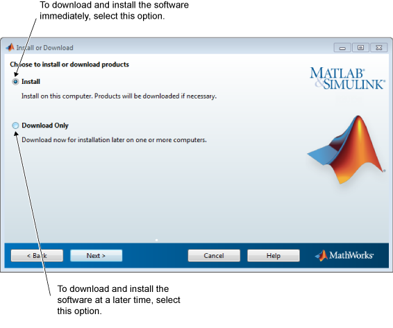

MATLAB® 제품을 즉시 설치할지 또는 MATLAB 제품을 나중에 설치할 수 있도록 소프트웨어를 다운로드할지 선택합니다.
소프트웨어를 즉시 설치하려면 설치를 선택합니다.
이 옵션을 선택하면 MathWorks®에서 MATLAB 제품을 다운로드하고 현재 로그인해 있는 컴퓨터에 소프트웨어를 설치할 수 있습니다.
소프트웨어를 지금 다운로드하고 MATLAB 제품을 나중에 설치하려면 다운로드만을 선택합니다.
이 옵션을 선택하면 MathWorks에서 지정한 다운로드 폴더로 소프트웨어를 다운로드하고 언제든지 소프트웨어를 설치할 수 있습니다. 하나 이상의 컴퓨터를 위한 제품을 하나 이상의 플랫폼에 설치할 수 있습니다.
